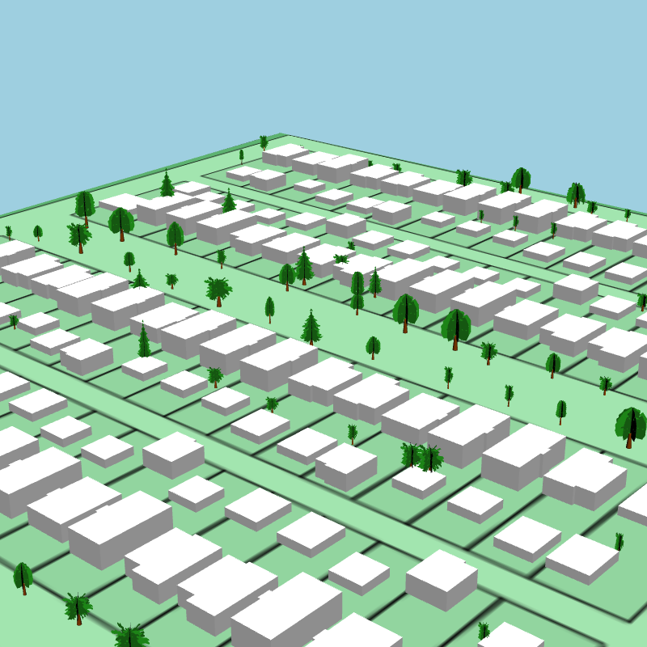
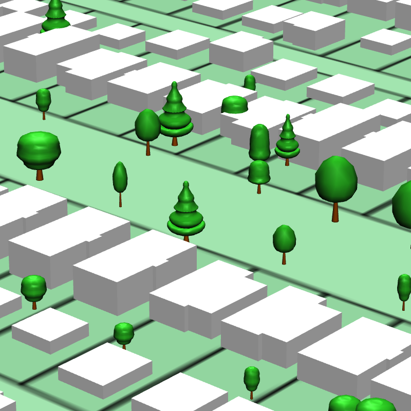
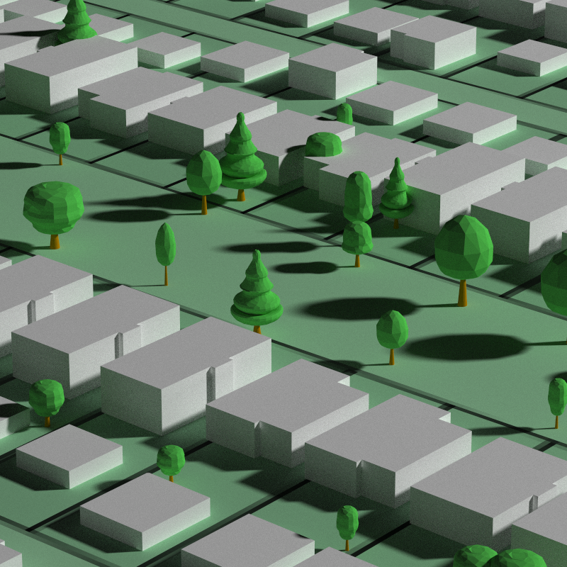
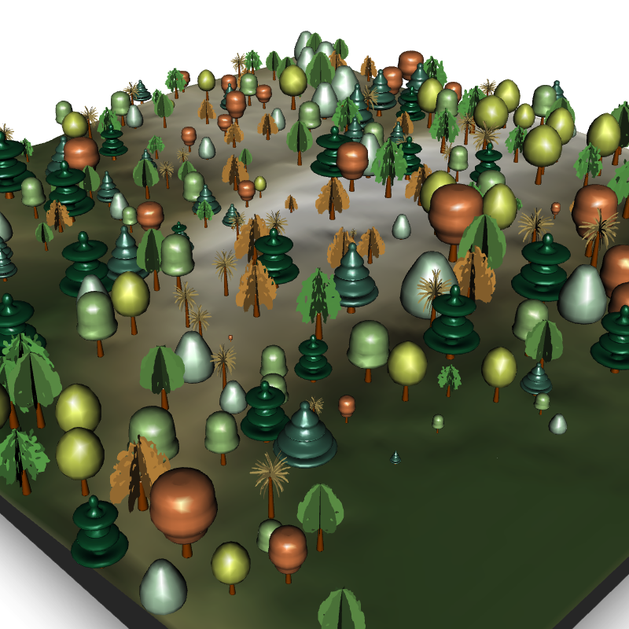

tree3d is an R package that provides highly customizable 3D tree models for data visualization and 3D scene creation. tree3d allows you to generate tree models as OBJ files, which can then easily be integrated into your data visualization, animation, or 3D rendering workflows.
Features
Variety of tree models: Includes both planar and solid tree models.
Multiple crown types: Provides a wide range of crown types, including: columnar, oval, palm, pyramidal, rounded, spreading, vase, and weeping. Each type offers a unique visual aesthetic to represent different types of trees.
Customizable dimensions and color: Allows you to adjust the diameter, height, and color of both the tree’s crown and trunk individually. This flexibility allows you to customize the tree model for your specific use case.
Installation
tree3d can currently be installed from Github.
install.packages("remotes")
remotes::install_github("tylermorganwall/tree3d")Examples
Let’s load the sandbox data included in the Github repository. We will then unzip the file, and then load the shapefiles into R using {sf}.
library(tree3d)
library(sf)
#> Linking to GEOS 3.11.0, GDAL 3.5.3, PROJ 9.1.0; sf_use_s2() is TRUE
library(terra)
#> terra 1.7.18
library(rayshader)
# Download the sample data
temp_download = tempfile(fileext = ".zip")
download.file("https://github.com/tylermorganwall/tree3d/raw/main/inst/extdata/tree3d_sandbox_data.zip", temp_download)
# Unzip and get directory
unzip(temp_download, exdir = tempdir())
zipdir = paste0(tempdir(), .Platform$file.sep,
"sandbox_data", .Platform$file.sep)
# Load all files
poly_boundary = sf::st_read(paste0(zipdir, "Area_Boundary_subset.shp"), quiet = TRUE)
baseline_tree = sf::st_read(paste0(zipdir, "Baseline_Trees_Z_clip.shp"), quiet = TRUE)
building_baseline = sf::st_read(paste0(zipdir, "Buildings_Baseline_2020_Z_clip.shp"), quiet = TRUE)
parcels = sf::st_read(paste0(zipdir, "Parcels_2020_clip.shp"), quiet = TRUE)
dem = terra::rast(paste0(zipdir, "DEM_2013_subset_zero.tif"))
# Inspect the tree data
head(baseline_tree)
#> Simple feature collection with 6 features and 8 fields
#> Geometry type: POINT
#> Dimension: XYZ
#> Bounding box: xmin: 493801.7 ymin: 5452079 xmax: 493951.7 ymax: 5452181
#> z_range: zmin: 7.19 zmax: 16.25
#> Projected CRS: NAD83 / UTM zone 10N
#> Species Height Type Location MatureSize Diameter CrownType
#> 1 Prunus cerasifera 7.19 Deciduous Street Small 4.6 spreading1
#> 2 Acer x freemanii 16.25 Deciduous Street Large 12.1 oval
#> 3 Acer x freemanii 16.22 Deciduous Street Large 7.5 oval
#> 4 Fraxinus ornus 8.09 Deciduous Street Medium 4.1 oval
#> 5 Parrotia persica 9.20 Deciduous Street Medium 4.1 spreading1
#> 6 Sorbus aria 9.67 Deciduous Street Medium 5.3 oval
#> Color geometry
#> 1 <NA> POINT Z (493937.4 5452179 7...
#> 2 <NA> POINT Z (493951.7 5452079 1...
#> 3 <NA> POINT Z (493831.7 5452181 1...
#> 4 <NA> POINT Z (493801.7 5452167 8...
#> 5 <NA> POINT Z (493845.4 5452181 9.2)
#> 6 <NA> POINT Z (493898.5 5452165 9...Now that our data is loaded, let’s generate a 3D map with rayshader. We will load in our
#Use rayshader to convert the DEM to a matrix and generate a 3D mesh
dem_mat = raster_to_matrix(dem)
dem_mat |>
constant_shade("#6dbd83") |>
add_overlay(generate_polygon_overlay(poly_boundary, extent = ext(dem),
heightmap = dem_mat,
palette = "#bcebc9")) |>
add_overlay(generate_polygon_overlay(parcels, extent = ext(dem),
heightmap = dem_mat,
palette = "#afe0bd")) |>
plot_3d(dem_mat, background = "lightblue", windowsize = 800)
#Render the buildings as extruded polygons
render_polygons(building_baseline,
extent = ext(dem),
data_column_top = "height_ag",
clear_previous = TRUE,
color = "white",
heightmap = dem_mat)
render_camera(theta = 44, phi = 36, zoom = 0.7, fov = 50, shift_vertical = -30)
render_snapshot()
Now that we have our 3D map generated, let’s add our custom trees using rayshader’s render_trees() function. tree3d provides get_crown_file() and get_trunk_file(), which allows access to the separate 3D models included in the package. Passing in each model separately gives you full control over the size, shape, and colors of the trees.
# Render the trees, using data from `baseline_tree` to draw each tree individually
for(i in seq_len(nrow(baseline_tree))) {
single_tree_info = baseline_tree[i,]
tree_defaults = get_tree_data(single_tree_info$CrownType)
latlongheight = as.matrix(st_geometry(single_tree_info)[[1]])
render_tree(long = latlongheight[1], lat = latlongheight[2],
extent = ext(dem), heightmap = dem_mat,
tree_height = single_tree_info$Height,
crown_width = single_tree_info$Diameter,
trunk_height_ratio = tree_defaults$trunk_crown_ratio,
custom_obj_crown = get_crown_file(tree = single_tree_info$CrownType),
custom_obj_trunk = get_trunk_file())
}
render_camera(40, 23, 0.25, 90)
render_snapshot()
We can also generate high quality renders with our trees using rayshader:. Here, we use the solid models.
render_tree(clear_previous = TRUE)
for(i in seq_len(nrow(baseline_tree))) {
single_tree_info = baseline_tree[i,]
tree_defaults = get_tree_data(single_tree_info$CrownType)
latlongheight = as.matrix(st_geometry(single_tree_info)[[1]])
render_tree(long = latlongheight[1], lat = latlongheight[2],
extent = ext(dem), heightmap = dem_mat,
tree_height = single_tree_info$Height,
crown_width = single_tree_info$Diameter,
trunk_height_ratio = tree_defaults$trunk_crown_ratio,
custom_obj_crown = get_crown_file(tree = single_tree_info$CrownType,
solid = TRUE),
custom_obj_trunk = get_trunk_file())
}
render_camera(40, 23, 0.10, 90)
render_snapshot()
render_highquality(min_variance = 0,
sample_method = "sobol",
samples = 2048,
lightaltitude = 30,
lightdirection = 45)
We can also extract 3D tree information from lidar data using the lidR package and use that data to generate 3D trees. Here, we’ll use random trees from the package to fill in our scene.
library(lidR)
library(sf)
library(terra)
#We will use the lidR package to generate a DEM and detect the crown tops of trees, and
#then use rayshader to render 3D tree models scaled to those heights on the map.
#Load the example data from the lidR package
LASfile = system.file("extdata", "Topography.laz", package="lidR")
las = lidR::readLAS(LASfile, filter = "-inside 273450 5274350 273550 5274450")
#Convert the lidar point data to a DEM and detect the location of trees from the same data
dem = lidR::rasterize_terrain(las, algorithm = lidR::tin())
tree_top_data = lidR::locate_trees(las, lidR::lmf(ws = 5))
tree_locations = sf::st_coordinates(tree_top_data)
#Convert DEM to a matrix and extract the extent of the scene
dem_matrix = raster_to_matrix(dem)
dem_extent = terra::ext(dem)
extent_values = dem_extent@ptr$vector
#Plot the ground
dem_matrix |>
height_shade() |>
add_shadow(texture_shade(dem_matrix),0.2) |>
add_shadow(lamb_shade(dem_matrix),0) |>
plot_3d(dem_matrix, windowsize = 800, zscale = 2)
render_snapshot()
#Get tree data
tree_df = tree3d::get_tree_data()
tree_df
#> name solid_available trunk_color tree_color trunk_crown_ratio
#> 1 columnar TRUE #8C6F5B #A2C683 0.3333333
#> 2 pyramidal1 TRUE #8C6F5B #066038 0.1666667
#> 3 pyramidal2 TRUE #8C6F5B #447765 0.1666667
#> 4 oval TRUE #8C6F5B #CBD362 0.3333333
#> 5 palm FALSE #8C6F5B #CCB471 0.5000000
#> 6 rounded FALSE #8C6F5B #7CB262 0.3333333
#> 7 spreading1 TRUE #8C6F5B #DB8952 0.3333333
#> 8 spreading2 FALSE #8C6F5B #E0A854 0.3333333
#> 9 vase FALSE #8C6F5B #75C165 0.3333333
#> 10 weeping TRUE #8C6F5B #AECCB1 0.3333333
set.seed(1)
random_trees = tree_df[sample(1:10, nrow(tree_locations), replace=TRUE),]
random_trees$solid_available = ifelse(random_trees$solid_available,
sample(c(TRUE,FALSE),1),
FALSE)
head(random_trees)
#> name solid_available trunk_color tree_color trunk_crown_ratio
#> 9 vase FALSE #8C6F5B #75C165 0.3333333
#> 4 oval TRUE #8C6F5B #CBD362 0.3333333
#> 7 spreading1 TRUE #8C6F5B #DB8952 0.3333333
#> 1 columnar TRUE #8C6F5B #A2C683 0.3333333
#> 2 pyramidal1 TRUE #8C6F5B #066038 0.1666667
#> 7.1 spreading1 TRUE #8C6F5B #DB8952 0.3333333
render_camera(theta=45,phi=30,zoom=0.3,fov=90, shift_vertical = -10)
for(i in seq_len(nrow(tree_locations))) {
trunk_ratio_single = tree_df$trunk_crown_ratio[which(tree_df$name == random_trees[i,1])]
render_tree(lat = tree_locations[i,2], long = tree_locations[i,1],
custom_obj_crown = get_crown_file(random_trees[i,1], resolution = "high",
solid = random_trees[i,2]),
custom_obj_trunk = get_trunk_file(),
absolute_height = TRUE,
tree_height = tree_locations[i,3],
trunk_height_ratio = trunk_ratio_single,
crown_width_ratio = 0.75 + 0.25 * runif(1),
crown_color = random_trees[i,4],
angle = c(0,360*runif(1),0),
extent = dem,
zscale = 2,
heightmap = dem_matrix)
}
render_snapshot()